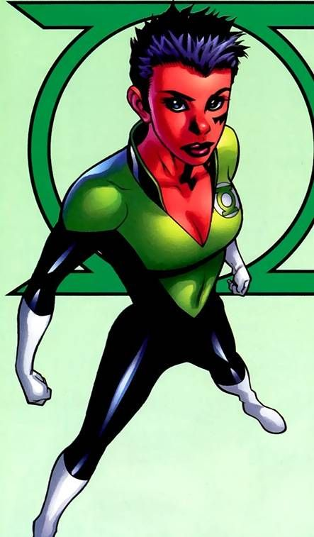

Green Lantern Corps
Soranik Natu
A surgeon drawn into Lantern service.
Soranik Natu is a Korugarian surgeon drawn into Lantern service despite her world’s distrust of the uniform. Recharge introduces the conflict between her medical duty and the Corps.
Continuity: Introduced as a Green Lantern in Recharge; later Sinestro Corps leadership is discussed in the closed history.
- Affiliation
- Green Lantern Corps
- First appearance
- Green Lantern Corps: Recharge #1 (2005)
Story history — History and later developments — spoilers
Korugar’s experience under Sinestro makes Soranik reluctant to accept Green Lantern authority. Her medical perspective remains important after joining. Later she learns Sinestro is her father and eventually leads Yellow Lanterns herself. Hal Jordan and the Green Lantern Corps #25 makes her relationship with Kyle Rayner and the green/yellow alliance part of a painful break. A green roster classification describes her introduction, not every later allegiance.
Reference scope: DC identifies Recharge #1 (2005) as the debut and documents the later Yellow Lantern period in its #25 recap.
Profile reviewed 2026-11-04.